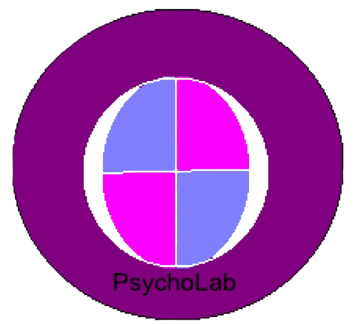

PSYCHOLAB 1.0 - Laboratoire de psychologie[_][□][x]Cliquez sur une région. Les structures profondes (thalamus, hippocampe, amygdale) sont dessinées en transparence.
Chaque région a une fonction principale et des conséquences connues en cas de lésion. Avant de lire, essayez de deviner les symptômes.
Le courant est appliqué de 10 à 90 ms. Réduire le sodium imite un bloqueur (anesthésique local, tétrodotoxine) : le potentiel d'action disparaît.
Modèles pédagogiques très simplifiés. Ils ne servent ni à diagnostiquer ni à soigner. En cas de doute sur sa santé, consultez un médecin.
Cliquez sur la couleur de l'encre, pas sur le mot lu. 20 essais.
Cliquez dès que le bouton devient vert.
Choisissez un cours. Chaque cours contient une partie théorie et un exercice pratique.
Objectif : retirer le maximum de tumeur sans toucher les zones fonctionnelles, que l'on repère en stimulant le cortex du patient éveillé.
Simulation très simplifiée à but pédagogique : une vraie opération s'appuie sur l'imagerie, la neuronavigation et une équipe pluridisciplinaire.
Questionnaire de 10 items, non validé scientifiquement : il illustre le modèle mais n'est pas un test psychologique.
Instantané du 7 octobre 2026, résumé à partir des sources indiquées. Ce carnet ne se met pas à jour tout seul : il faut régénérer le logiciel pour l'actualiser. Les études citées sont souvent préliminaires.